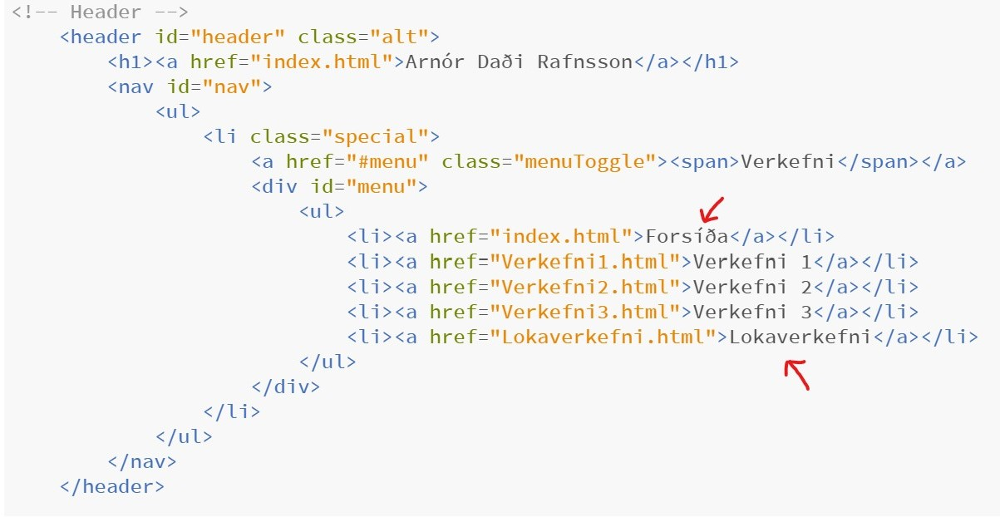
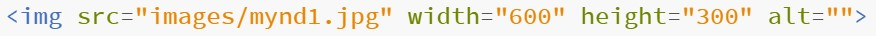
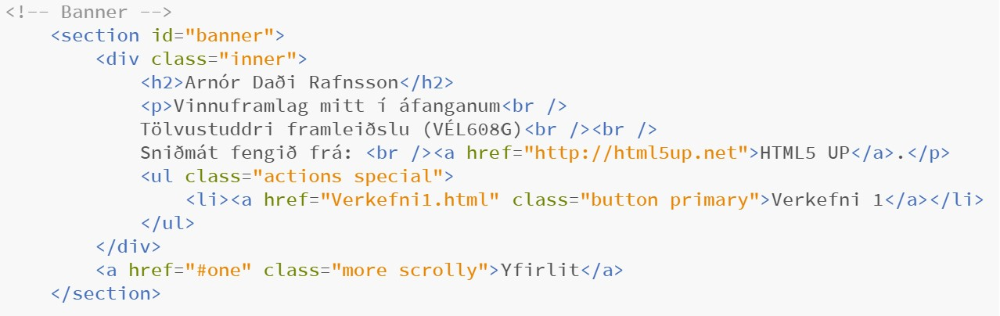
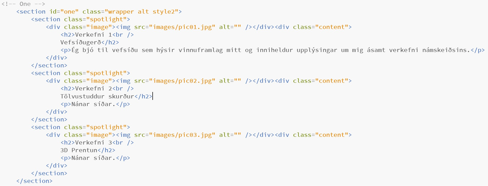
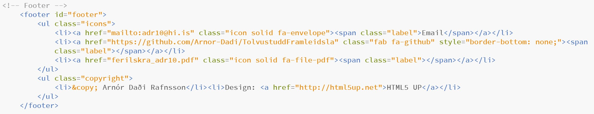

Verkefni 1
Gerð vefsíðu sem inniheldur vinnuframlag mitt
Verkefnislýsing
Fyrsta verkefnið snýst um að búa til vefsíðu sem inniheldur vinnuframlag manns í áfanganum. Hér að neðan mun ég lýsa hvernig ég framkvæmdi verkefnið bæði með texta og myndum og að auki mun ég mun ég segja frá hvað ég vil fá út úr áfanganum ásamt því að velta því fyrir mér hvað ég myndi vilja gera sem lokaverkefni. Loks mun ég svo útskýra hvernig ég hlóð síðunni á Github.
Fyrstu skref
Það fyrsta sem ég gerði var að horfa á kennslumyndböndin sem innihalda leiðbeiningar um hvernig framkvæma á fyrsta verkefnið. Eftir fyrsta myndbandið hlóð ég niður forritinu Brackets sem er ritill fyrir kóða og hentar mjög vel fyrir vefsíðugerð.
Næst fór ég inn á síðuna HTML5 UP þar sem ég byrjaði að skoða hvaða sniðmát þar myndu henta vel fyrir þennan áfanga og hlóð ég loks niður sniðmátinu Spectral. Ég valdi það þar sem mér fannst það líta vel út, forsíðan hentar vel að mínu mati og valmyndin fyrir verkefnin einnig.
Við gerð vefsíðunnar studdist ég einnig við verkefni Sæmundar Guðmundssonar frá árinu 2022 sem mér fannst mjög flott og skýrt.
Vefsíðugerðin
Þegar ég var búinn að hlaða niður sniðmátinu hófst vinnan við að skrifa texta og breyta ákveðnum hlutum í kóðanum þannig að vefsíðan yrði eins og ég vildi að hún væri. Ég byrjaði að vinna að forsíðunni með því að opna index.html skrána en þar breytti ég titlinum í nafnið mitt og fór að íslenska nokkur atriði.
Næsta skref var að endurnefna generic.html skrána Verkefni1.html og þá skrá afritaði ég nokkrum sinnum fyrir næstu verkefni. Ég breytti því svo þannig að hægt verður að nálgast verkefnin í valmyndinni upp í hægra horninu.
Upphaflega þegar ég setti þessa mynd inn var hún of stór og passaði ekki þannig að ég breytti breiddinni á myndinni á eftirfarandi hátt
Þessa aðferð fann ég á síðunni W3Schools en það er síða sem er með góðar leiðbeiningar fyrir HTML. Það sem ég gerði var að fara inn í properties á myndinni sjálfri og gat þar með séð breiddina og hæðina á myndinni og breytti ég hlutföllunum þannig að myndin væri yrði í þeirri stærð sem ég vildi hafa hana.
Svo var komið að Banner forsíðunnar en þar setti ég mitt nafn ásamt stuttri lýsingu fyrir neðan nafnið mitt hvað vefsíðan inniheldur. Fyrir neðan þetta er svo takki sem ég ákvað að tengja við síðu verkefnis 1 en þessi takki mun alltaf vera uppfærður þannig að hann innihaldi nýjasta verkefnið hverju sinni. Þetta er hugmynd sem kom upp í verkefni Sæmundar en hann ákvað að lokum að hafa aðra virkni fyrir takkann.
Mér fannst næsti hlutinn á forsíðunni frá sniðmátinu ekki henta fyrir mig svo ég eyddi honum út en þar á eftir koma nokkrir hlutar sem ég mun nota sem stutta kynningu á verkefnunum.
Næsta hluta forsíðunnar úr sniðmátinu ákvað ég að nota fyrir stutta kynningu um mig og þar fyrir neðan er hlekkur á ferilskrána sem inniheldur nánari upplýsingar. Táknin fyrir þennan hluta fann ég inni á síðunni Font Awesome en þar leitaði ég að táknunum og fékk ‘class’ nafnið sem þarf til að táknið birtist á vefsíðunni. Það var einn takki í viðbót fyrir neðan ferilskrána sem ég vissi ekki alveg hvað ég vildi gera við en ég ákvað að lokum að hafa virkni hans þannig að hann vísaði mann efst á forsíðuna. Gæti breytt honum í eitthvað annað síðar mögulega.
Það síðasta sem átti eftir að gera fyrir forsíðuna var að breyta Footer hlutanum en þar ákvað ég að setja inn hlekki á netfangið og Githubið mitt. Táknin fann ég eins og áður inni á Font Awesome. Þetta leit að lokum svona út hjá mér
Þessi Footer mun svo einnig vera á öllum verkefna síðunum en þar með var forsíðan nokkurn veginn tilbúin.
Hvað vil ég fá út úr áfanganum?
Ég hef mikinn áhuga og metnað til þess að læra nýja hluti og afla mér þekkingar á nýjum sviðum og tel ég að þessi áfangi muni hjálpa mikið með það. Þetta mun hjálpa að bæta verkefnastjórnun og skipulag manns ásamt skrásetningu á vinnu og tíma. Einnig mun ég læra um hönnun fyrir geislaskurð, þrívíddar prentun auk annarra áhugaverðra hluta tengdum tölvustuddri framleiðslu. Hér í byrjun fær maður einnig grunn í vefsíðugerð sem er hæfileiki sem getur nýst manni vel í framtíðinni.
Ég er ekki enn alveg viss hvað ég myndi vilja gera sem lokaverkefni. Mér myndi hins vegar finnast það áhugavert að gera mögulega eitthvað verkefni tengt golfi sem er mitt helsta áhugamál og þar sem að það kemst fátt annað að á sumrin en að æfa og keppa í golfi hjá mér ásamt því að vinna við það líka.
Uppsetning á Github
Hér byrjaði ég aftur að horfa á kennslumyndböndin til að fá nánari leiðbeiningar um uppsetningu Github. Ég hlóð niður Git Bash ásamt því að búa til aðgang á Github og þar bjó ég til Repository sem ég skýrði TolvustuddFramleidsla